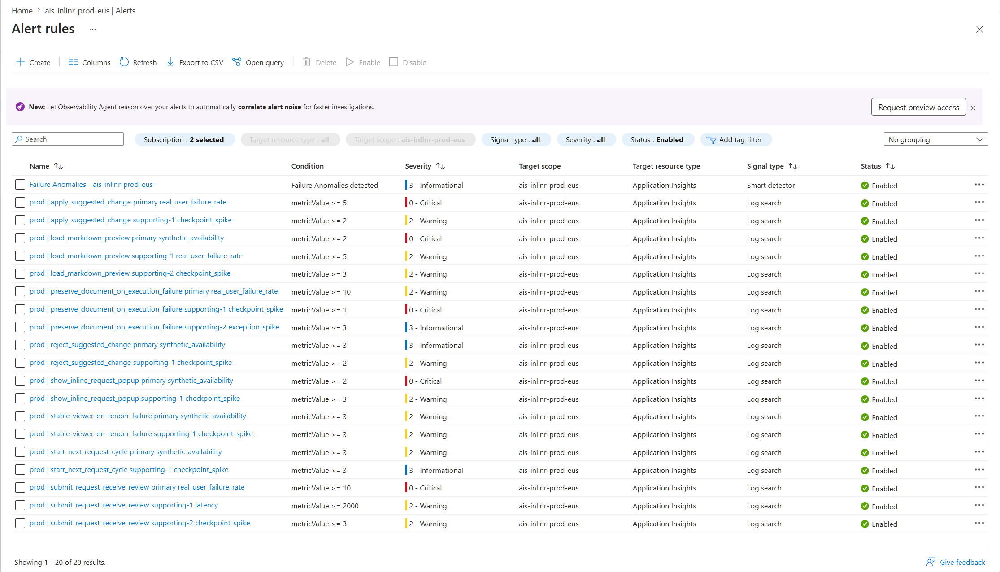

Product strategy lead. Reviews repo, market, and adjacent AI workflows to file high-leverage product issues.
- In
- Repo activity,
product/, market and adjacent-AI signals. - Out
- One bounded product issue per run.
Inlinr is a VS Code extension for inline, selection-based AI editing of Markdown. You select text in a doc, spec, or prompt, ask for a targeted revision, review the proposed change in context, and apply it without detouring into chat. This page maps the development lifecycle behind the extension: how work is discovered, built, reviewed, released, and monitored.
Discovery agents file issues. Issue Triage routes them. Implementation produces a reviewable pull request. Three specialized review agents plus CI decide merge readiness. Release packages, deploys monitoring, and publishes to the Marketplace.
tests/unit)tests/integration)tests/webview)npm run verify:release before PREvery named workflow we built, grouped by lifecycle phase. Each card shows what it consumes (In) and what it produces (Out). Agentic workflows are LLM-driven; deterministic workflows are pure CI.
Agents that find the next high-leverage work and file it as issues.
Product strategy lead. Reviews repo, market, and adjacent AI workflows to file high-leverage product issues.
product/, market and adjacent-AI signals.UX design lead. Audits editor-native fit, motion, and perceived speed. Files distinct UX issues only.
product/, architecture/, specs/, src/, media/, package.json, plus VS Code UX docs and Marketplace references.Audits drift across product, architecture, specs, monitoring, and shipped code. Opens at most one drift issue.
product/, architecture/, specs/, src/, monitoring/.Bound and route each piece of work before any code is written.
Classifies issues, applies routing labels, posts a single triage comment, and assigns Copilot only when work is bounded and low-risk.
Local-first spec, implement, and verify loop. Tests run before any PR opens.
Local-first authoring flow that turns approved scenarios into implementation-ready specs, plans, and ordered tasks.
product/, architecture/.spec.md, plan.md, tasks.md, source code.Pure-Node unit suite under tests/unit driven by @vscode/test-cli through tests/runTest.ts. Runs via npm run test:unit.
src/ + tests/unit.Runs in a real VS Code Extension Host via @vscode/test-electron. Exercises commands, custom editors, and provider wiring under tests/integration.
tests/integration in Extension Host.Browser-based selection contract tests per ADR-007. Runs the Markdown viewer bundle in headless Chromium under tests/webview via npm run test:webview.
media/markdownViewer/ bundle + selection fixtures.One-shot gate that compiles, runs the full Mocha suite, and packages the VSIX. Mirrors what CI and the release workflow run.
.vsix + test evidence.Parallel agentic reviews plus CI decide whether auto-merge can fire.
Surfaces reality gaps, hidden assumptions, silent failures, and loops that are not actually closed.
product/user-scenarios.md, scenario context.Checks XSS, prompt injection, telemetry leakage, workflow privilege drift, and protected paths.
architecture/security-principles.md.Flags layer violations, duplicated rules, weak tests, and design drift that raises future change cost.
architecture/ principles and contracts.Compiles, runs unit and integration suites, and packages the VSIX artifact for inspection.
.vsix artifact.Enables auto-merge only when all three review labels are cleared and no protected paths are touched.
workflow_run.Multi-stage release: verify, package, deploy monitoring, publish to Marketplace.
Verifies version, compiles, tests, packages, and orchestrates monitoring deploy plus Marketplace publish.
workflow_dispatch.Deploys generated Azure alert rules to prod, then verifies the expected scheduled query rule count.
infra/monitoring/.Validates the public README, then publishes the VSIX to the Visual Studio Marketplace.
.vsix + public README.md.Three agents and a deterministic pipeline keep scenarios, contract, telemetry, and alerts aligned.
Maintains the readable scenario catalog at monitoring/monitoring-scenarios.md from current implementation and product context.
product/, architecture/, src/.monitoring/monitoring-scenarios.md.Translates readable scenarios into monitoring/scenario-contract.yaml, the canonical machine-readable contract.
monitoring/monitoring-scenarios.md.monitoring/scenario-contract.yaml.Finds where each contract scenario should be monitored and instruments the real emission sites across src/** (editors, requests, sessions, rendering, extension host) plus tests — not just src/telemetry/**.
monitoring/scenario-contract.yaml + existing telemetry code.src/** and tests.Validates contract and alert alignment, generates alert policies, and uploads them as deployable artifacts.
monitoring/scenario-contract.yaml + monitoring/alert-policies.yaml.Periodic audits and metrics that feed back into discovery and engineering priorities.
Five-phase audit of a target repo (discovery, code structure, workflows, issues/PRs, opportunities). Files one bounded improvement issue.
[repo-audit] improvement issue.Tracks size, quality, churn, test coverage, docs, and AI-slop signals. Publishes a trend report as a GitHub Discussion with 6 charts.
src/, tests/, git history, prior history.jsonl.Keeps published user docs under docs/user/ aligned with shipped behavior — crisp, accurate, and free of internal detail.
src/, media/, package.json, README.md, product/.docs/user/**/*.md, or noop when no change is needed.Inlinr's monitoring is layered intentionally. Three agentic workflows maintain the readable scenario catalog, the canonical machine contract, and the runtime telemetry implementation. A separate deterministic pipeline validates that contract and generates alert policies, and the release workflow deploys them to Azure. Each layer has a single source of truth and a clear writer.
Product scenarios, ADRs, and reliability goals from product/ and architecture/.
Maintains monitoring/monitoring-scenarios.md, the readable scenario catalog.
Translates intent into monitoring/scenario-contract.yaml, the canonical machine contract.
Instruments the real emission sites across src/** and tests so runtime behavior matches the contract.
Validates the contract and generates alert policies on PR and main.
Release stage deploys generated alerts to prod and verifies the rule count.
A single non-functional requirement, traced through each layer it touches. Same intent, four representations, one writer per layer.
For the inline request flow, a user should see a reviewable suggested change within 2 seconds of submitting a request from the popup.
Submit a request and receive inline review state
Criticality: Core
Journey: A user enters a request, submits it from the inline popup, and sees pending feedback followed by a reviewable suggested change rendered in the document flow at the targeted location within 2 seconds of submit.
Key checkpoints:
Monitoring intent: Catch failures where request submission stalls, suggestion generation exceeds the expected latency budget, the user never reaches review, or the returned suggestion is detached from the intended document context.
- scenario_id: submit_request_receive_review
title: Submit a request and receive inline review state
criticality: core
journey:
success_condition: Pending feedback appears and a reviewable
inline suggestion is rendered at the targeted document
location within 2 seconds of submit.
runtime:
owner_component: request_execution
checkpoints:
- { checkpoint_id: request_submitted, order: 1 }
- { checkpoint_id: pending_visible, order: 2 }
- { checkpoint_id: review_rendered_inline, order: 3,
latency_sensitive: true }
alerting:
profile: core_request_execution
const submitAttempt = this.startScenarioAttempt(
document, 'submit_request_receive_review', { sessionId }
);
const submitStartedAt = Date.now();
// ...accept input, validate draft...
this.emitScenarioCheckpoint(submitAttempt, 'request_submitted', 'pass');
// ...resolve anchor, dispatch to provider...
this.emitScenarioCheckpoint(submitAttempt, 'pending_visible', 'pass');
const executionResult = await this.executionService.execute(payload);
// ...render suggestion into the document...
this.emitScenarioCheckpoint(submitAttempt, 'review_rendered_inline', 'pass', {
durationMs: Math.max(0, Date.now() - submitStartedAt) // 2 s budget
});
this.completeScenarioAttempt(submitAttempt, 'success');

The harness only works when each workflow knows where to read intent from and where to write evidence to. These are the top-level folders the lifecycle relies on, grouped by the role they play. Source-of-truth folders are written by humans (or by agents that maintain a canonical artifact); implementation and operations folders are where code, tests, and pipelines apply that intent.
Human-authored intent. Agents read these to decide what to build, review, monitor, and ship.
product/
Human-authored product intent. Read first by every planning and review agent.
architecture/
Technical source of truth for system shape and decisions.
specs/
SpecKit feature specs that drive the build phase.
spec.md)plan.md)tasks.md)monitoring/
Scenario and telemetry source of truth that drives the monitoring loop.
Where intent becomes runnable code and where tests prove it still matches intent.
src/
VS Code extension TypeScript, organized by surface.
media/
Webview assets shipped with the extension.
tests/
Test suites. Required evidence on every PR that touches the matching surface.
prompts/
Curated model prompts used at runtime.
Workflows, infrastructure, and helpers that automate the lifecycle and ship the product.
.github/
Lifecycle automation and contributor guardrails.
infra/
Azure infrastructure for monitoring. Deployed by the release stage.
scripts/
Build and dev-loop helpers.
tools/
Deterministic tooling that backs lifecycle pipelines.
Where the harness publishes outward-facing context for users, contributors, and reviewers.
docs/external/
Public GitHub Pages content.
docs/internal/
Contributor-only notes that must stay out of the Marketplace README.
Root
Marketplace-public surfaces. Treated as user-facing copy, not contributor docs.
README.mdCHANGELOG.mdLICENSE